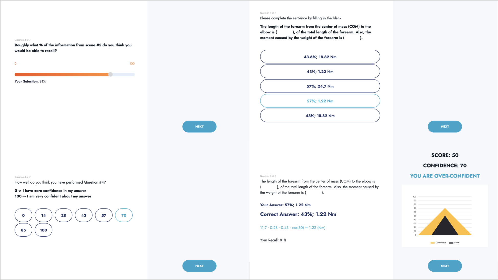

In the previous experiments, the quiz questions and learning assessment questions were provided in paper forms to participants. Since we stapled many pages of questions together, when answering questions participants had to manually turn the pages after viewing each AR scene. This had confused some participants when they turned to the wrong page. It was additionally challenging to prevent participants from looking back to questions they had already answered and peeking at questions from lectures they had not yet studied. To address these issues, we developed a question-answering and scoring system using a tablet. Participants could easily answer questions by simply tapping on the touch screen of the tablet computer on the desk, and can see test scores, solving processes, and learning assessment results in real time.
Digitizing the Metacognitive and Quiz Questions
October 2022
